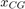

Contents
function [rigidBodySS,alph0,T0,thetaT0] = ... getRigidBodySS(S,rho,CL0,CLa,CLd,xFins,xAC,Cm0,Cma,Cmd,CD0,kD,... Dref,V0,gamm0,Vdot0,l,dm,listAcc,Jy,xCG)
Generates the rigid-body state-space system of a missile.
Author : Anatole VERHAEGEN
The first step is to find the equilibrium. The algorithm defines symbolic variables to create the three equations of motion. An approximate solution of the trim is found and feeds the solver to find a numerical solution for the trim. Once this equilibrium is found the second step is to compute the state-space matrices A,B,C,D with uncertainty on and 
INPUTS:
- S : reference surface (m2)
- rho : air density (kg/m3)
- CL0, CLa : lift coefficients (zero value and slope) (alph in rad !!)
- CLd : lift coeff slope of fins (rad-1)
- xFins : fins position (m)
- xAC : aerodynamic center position (m)
- Cm0, Cma : pitching moment coefficients (zero value and slope) (alph in rad)
- CD0, kD : zero lift drag and induced drag coefficient
- Dref : length reference (booster diameter) (m)
- V0 : Missile speed (m/s)
- gamm0 : flight path (rad)
- l : beam element length (m)
- dm : vector of nodes mass (kg) [nx1]
- listAcc : list of nodes features with an accelerometer
- Jy : Rotational inertia at CG about y-axis (kg.m2)
- xCG : CG position (m)
OUTPUTS:
- rigidBodySS : Uncertain SS system of the rigid body (FD + Actuators)
- alph0 : trim AoA (rad)
- T0 : trim thrust magnitude (N)
- thetaT0 : trim thrust orientation (rad)
Mass properties
m = sum(dm); % Mass
grav = 9.81;
Error using getRigidBodySS (line 44) Not enough input arguments.
Lift, Moment and Drag coefficients
syms u gamm alph q thetaT deltaF T % Symbolic variables CL = CL0 + alph*CLa + deltaF*CLd; % Lift coeff Cm = Cm0 + alph*Cma + deltaF*Cmd; % Pitching moment coeff CD = CD0 + kD*CL^2; % Drag coeff V = V0*(u+1); % Speed (u : reduced speed) qS = 1/2*rho*S*V^2; % dynamic pressure
State Equations
Propulsion equation
longax = -Vdot0 + 1/m*(-qS*CD + T*cos(alph+thetaT) - m*grav*sin(gamm)); % Lift equation gammdot = 1/(m*V)*(qS*CL + T*sin(alph+thetaT) - m*grav*cos(gamm)); % Link between alphdot, q and gammdot alphdot = q - gammdot; % Pitching moment equation qdot = 1/Jy*(qS*Dref*Cm - T*sin(thetaT)*xCG); % System of equations system = [longax,gammdot,alphdot,qdot]'; systemEq = subs(system([1,2,4]),{gamm,u,q,deltaF},{gamm0,0,0,0});
Approximate solution (gamm0 = 0)
alph0 = (m*grav/(1/2*rho*S*V0^2) -CL0)/CLa; T0 = (1/2*rho*S*V0^2)*(CD0 + kD*(CL0 + CLa*alph0)^2) + Vdot0*m; thetaT0 = 1/(T0*xCG)*(1/2*rho*S*V0^2)*(Dref*(Cm0+Cma*alph0));
Solving
[T0,thetaT0,alph0] = vpasolve(systemEq,[ T, thetaT, alph],[T0,thetaT0,alph0]); alph0 = double(alph0); T0 = double(T0); thetaT0 = double(thetaT0);
Compute SS system
Uncertainty definition
[xCG,T0,Cma,Cmd] = addUncertaintyRB(xCG,T0,CLa,CLd,xFins,xAC,Dref); % State matrix A11 = -1/(m*V0)*(1/2*rho*S*V0^2*CLa + T0*cos(thetaT0 + alph0)); A12 = 1; A21 = 1/Jy*1/2*rho*S*V0^2*Dref*Cma; A22 = 0; Arb = [A11 A12; A21 A22]; % Input matrix B1 = [-T0*cos(thetaT0 + alph0), -1/2*rho*S*V0^2*CLd]/(m*V0); B2 = [-T0*cos(thetaT0)*xCG, 1/2*rho*S*V0^2*Dref*Cmd]/Jy; Brb = [B1;B2]; % Output matrix Cx = eye(2); CAccCG = [-1/m*(1/2*rho*S*V0^2*CLa + T0*cos(thetaT0 + alph0)), 0]; CAcc = [CAccCG(1) + 1/Jy*(xCG - (listAcc-1)'*l)*1/2*rho*S*V0^2*Dref*Cma,... zeros(length(listAcc),1)]; Crb = [Cx; CAccCG; CAcc]; % Feedforward matrix Dx = zeros(2); DAccCG = -1/m*[T0*cos(thetaT0 + alph0), 1/2*rho*S*V0^2*CLd]; DAcc = ones(length(listAcc),1)*DAccCG +... 1/Jy*(xCG - (listAcc-1)'*l)*[-T0*cos(thetaT0)*xCG,... 1/2*rho*S*V0^2*Dref*Cmd]; Drb = [Dx; DAccCG; DAcc];
Naming
states
xnames = {'\alpha','q'};
% inputs
unames = {'\theta_T';'\delta_f'};
% outputs
ynames = {'\alpha','q','a_zCG'};
for acc = listAcc
ynames = [ynames, strcat('a_{z',num2str(acc),'}')];
end
Creating SS
rigidBodySS = ss(Arb,Brb,Crb,Drb); rigidBodySS.u = unames; rigidBodySS.y = ynames; rigidBodySS.StateName = xnames;